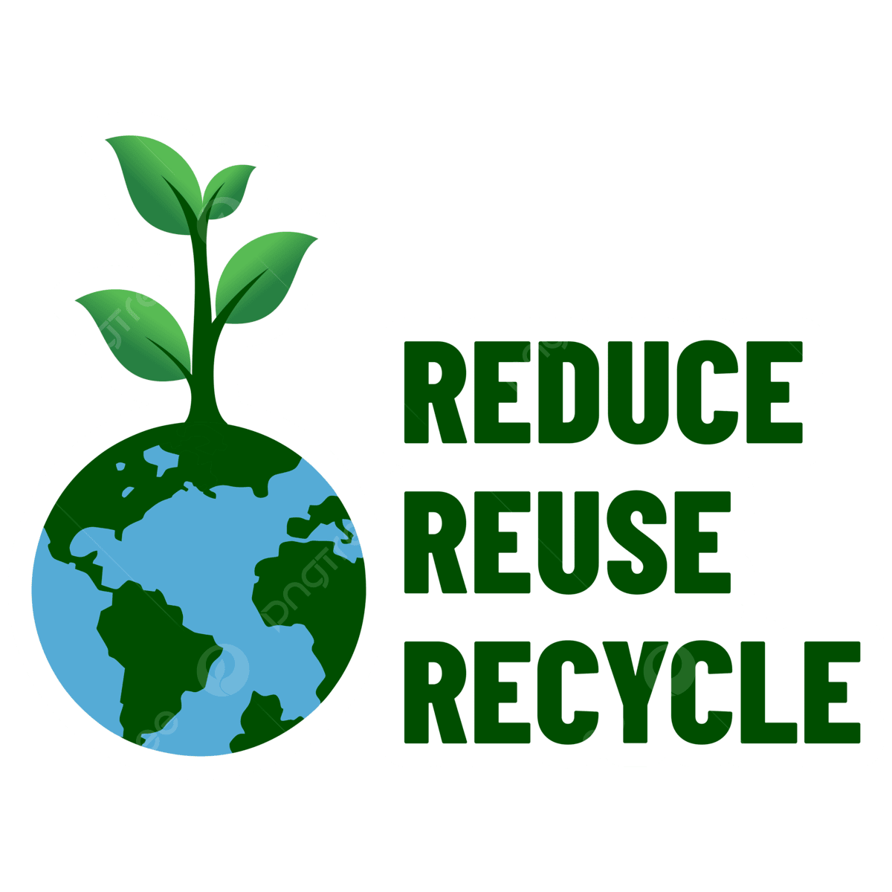
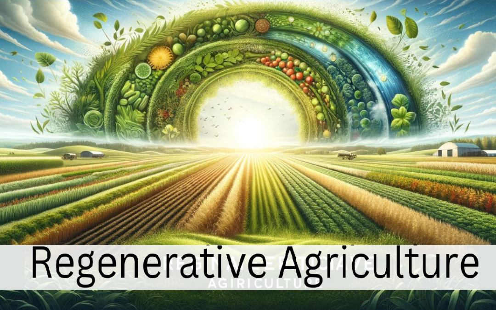
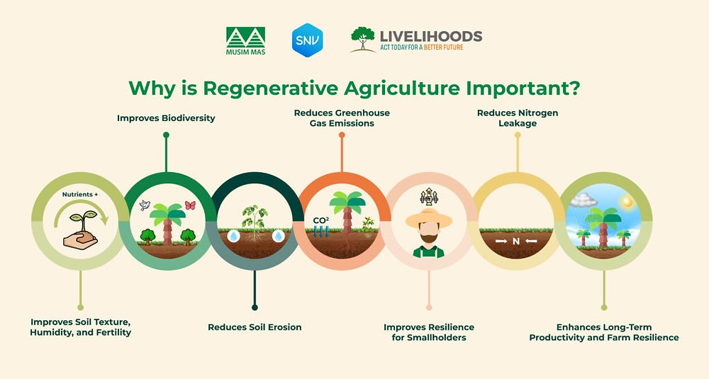

Regenerative agriculture is not a fixed recipe — practices are tailored to local climate, soil, and farm goals. Its a framework for making the land, community, and business healthier year after year
Regenerative agriculture is a conservation and rehabilitation approach to food and farming systems. It focuses on topsoil regeneration, increasing biodiversity, enhancing ecosystem services, supporting biosequestration, increasing resilience to climate change, and strengthening the health and vitality of farm soil.
Regenerative agriculture is not a specific practice. It combines a variety of sustainable agriculture techniques. Practices include maximal recycling of farm waste and adding composted material from non-farm sources.
Regenerative agriculture claims to mitigate climate change through carbon dioxide removal from the atmosphere and sequestration. Carbon sequestration is gaining popularity in agriculture from individuals as well as groups. However, such claims have also been subject to criticism by scientists.